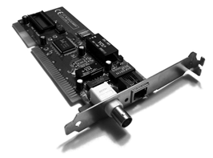
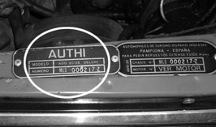

Aunque el Ethernet y el IEEE 802.3 son estándares que definen un método de acceso para una red de área local, no son idénticos. De hecho, tal y como muestra la figura, grupos de nodos utilizando estos dos estándares pueden convivir en el mismo medio físico a diferencia del medio físico de trabajo. De hecho, en los inicios de la aplicación y utilización del estándar Ethernet, este utilizaba exclusivamente en el cable coaxial. En cambio, el IEEE 802.3 fue diseñado con la intención de que pudiera utilizar cualquier medio, esto es, radio, cable coaxial, par trenzado, fibra óptica, etc.
Desde un punto de vista técnico, la metodología que utilizan tanto la Ethernet como el IEEE 802.3 para transmitir la información es el acceso múltiple con detección de portadora y detección de colisiones (CSMA / CD, carrier sense multiple access / colisión detect). A grandes rasgos, podemos afirmar que el CSMA / CD se dirige a sistemas de comunicaciones para el transporte de datos digitales para diferentes redes de área local en la que todos los nodos conectados comparten un mismo canal de comunicaciones pasivo, esto es, la éter (ether). Cabe destacar que esta es una forma literaria de definir la acción de compartir un mismo medio, es decir, un mismo cable.
En este tipo de redes (tanto las Ethernet como las IEEE 802.3) no hay un control centralizado del tráfico, dado que cada una de las estaciones tiene la responsabilidad de conocer sus paquetes propios y de extraer los datos correspondientes. Además, cada una de las estaciones debe ser capaz de acceder al medio para transmitir en el momento en que sea requerida.
Ethernet y IEEE 802.3 para con el modelo de referencia OSI
El modelo de referencia de interconexión de sistemas abiertos (OSI, Open System Interconnection) define una arquitectura de comunicación fundamentada en siete niveles verticales, en los que cada uno de los niveles ejecuta un abanico de funciones que permiten establecer la comunicación con otro sistema. Cabe decir que cada nivel fundamenta sus tareas en los servicios que ofrece el nivel que hay por debajo suyo y, al mismo tiempo, ofrece sus servicios al nivel que está por encima suyo.
La distribución en capas del modelo de referencia OSI se basa en la sentencia de perfil bélico "Divide y vencerás" de Julio César.
Julio César
Julio César fue un general militar y político romano que creó los cimientos del sistema imperial romano. Las recopilaciones históricos lo muestran vistiendo la toga, la corona y el cetro de un general triunfante y utilizando el título de emperador. Fue jefe de la religión del estado (pontifex maximus) y poseía el mando de todos los ejércitos.
Desde el punto de vista de los estándares Ethernet y IEEE 802.3, podemos destacar que ambos protocolos forman parte de la zona inferior del modelo de referencia OSI, esto es, en la capa física y en la mitad inferior de la capa de enlace de datos (figura). Esta situación privilegiada para con el modelo de referencia OSI les permite comunicarse con cualquier tipo de protocolo superior.
Tanto en la Ethernet como en el IEEE 802.3 la capa de enlace de datos del modelo de referencia OSI se divide en dos subcapas:
-
Control de acceso al medio (MAC, media acces control). Esta capa define el modo en que se transmiten las tramas por el hilo físico. Manipula el direccionamiento físico asociado a cada uno de los dispositivos, la definición de la topología de la red y la disciplina de la línea.
-
Control de enlace lógico(LLC, logical link control). Define el modo en que los datos son transferidas por el medio físico y proporciona servicios a las capas superiores. Esta subcapa se encarga del control de errores, el control de flujo y cómo se encapsula la información.
IEEE 802.3 es, actualmente, la implementación Ethernet más frecuente.
Direccionamiento MAC
- 
Para permitir la distribución local de tramas en el Ethernet, debe haber un sistema de direccionamiento, esto es, una modalidad para nombrar los ordenadores y las interfaces. De hecho, cada uno de los ordenadores tiene un único modo de identificarse y, con respecto a la red, tiene una dirección física. Es importante, pues, recordar que en el ámbito de la red no puede haber dos direcciones físicas iguales. De hecho, la dirección física se ubica en la tarjeta de interfaz de red (NIC, network interface card) con el nombre control de acceso al medio (MAC, media access control).
Tarjeta de red
La tarjeta de interfaz de red es una tarjeta de circuito impreso que proporciona capacidades de comunicación en red hacia un ordenador y desde un ordenador. Muchos ordenadores tienen una tarjeta de red del estándar Ethernet conectada a la placa madre del ordenador.
El Ethernet utiliza las direcciones MAC para identificar únicamente los dispositivos a título individual. De hecho, cada uno de los dispositivos presentes en una red de área local con una tarjeta de interfaz de red (NIC, network interface card) debe tener asignada una dirección MAC. De lo contrario, los otros dispositivos no se podrían comunicar con estos dispositivos.
- 
Número de bastidor de un coche
El número de bastidor es una sucesión de números y letras grabados sobre el chasis o el bastidor del vehículo que lo identifica a efectos legales y proporciona información sobre el modelo, el año y la fecha de fabricación del vehículo.
Si nos centramos en la estructura de la dirección MAC (figura), veremos que tiene una longitud de 48 bits, donde los seis primeros dígitos están administrados por el IEEE, esto identifica el fabricante y distribuidor y se llama identificador único de la organización (OUI, organizationally unique identifier). El resto de los dígitos comprenden el número de serie de la interfaz o bien cualquier otro valor administrativo de un distribuidor específico. A grandes rasgos, podemos identificar la dirección MAC como el número de bastidor presente en un coche. Con todo, hay que destacar que la dirección MAC es única en todo el mundo, por lo tanto, tomando como base el ejemplo, podríamos decir que la modalidad de nomenclatura del bastidor sería única para todo el mundo.
Hay que destacar la importancia del papel que tienen las direcciones MAC, dado que, en caso de que no existieran, las redes de área local convertirían un conjunto de ordenadores sin identificar y por donde no podría circular ningún paquete de información ya que no se sabría a quién va dirigido ni quien lo envía. De hecho, las redes de área local tipo Ethernet y 802.3 son redes basadas en la difusión, es decir, todas las estaciones ven (y examinan) cada uno de los paquetes de información que circulan, y averiguan a qué estación se dirigen.
Transmisión de información
Es inevitable destacar el importante abanico de semejanzas que hay entre la preparación y posterior transmisión de un paquete de información por una red respecto del envío de un paquete mediante el correo ordinario.
Llegados a este punto, es inevitable que nos preguntamos qué necesidad tienen los diferentes dispositivos presentes en una red de evaluar cada uno de los paquetes de información que circulan. De hecho, cuando un dispositivo presente dentro de una red Ethernet quiere enviar información a otro dispositivo, puede abrir una vía de comunicación mediante su dirección MAC, es decir, añadiendo la dirección MAC del dispositivo de destino a la información que envía.
Mientras los paquetes de información circulan por la red, las tarjetas de interfaz de red (NIC, network interface card) verifican si la dirección MAC insertada en la trama de información se corresponde con su dirección MAC.
En caso de que se dé esta coincidencia, la NIC verifica la dirección de destino presente en la cabecera de la trama y decide si acepta o no esta trama.
Cuando los datos son entregadas al destinatario, la NIC correspondiente saca los datos de "el envoltorio" y las entrega al ordenador para que las procese mediante los protocolos de capa superior como, por ejemplo, el IP y el TCP.